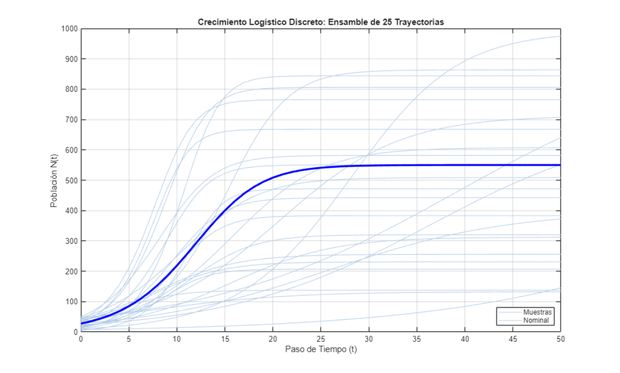
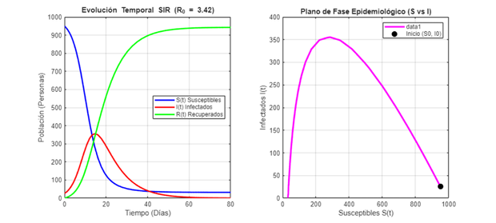
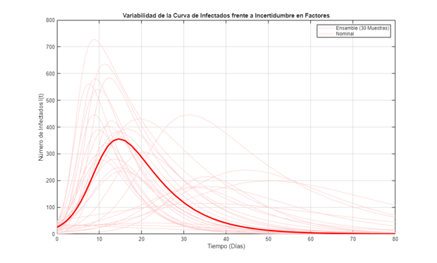

Contents
% DEMO_01_INTRODUCCION Guía Práctica e Introducción a Modelos Dinámicos % Curso guiado de GSUA-CSB % % Este script proporciona una introducción pedagógica a la formulación de % modelos en tiempo discreto y continuo definidos por el usuario, % declarando explícitamente factores (parámetros + condiciones iniciales) % y nombres de salidas, así como exploraciones de ensamble de incertidumbre.
1. Configuración del Entorno
clc; clear; close all; % --- Localización portable de la toolbox GSUA-CSB --------------------------- % Si la toolbox ya está instalada como .mltbx, sus funciones están en el path y % no hay que hacer nada. Si no, intentamos ubicaciones habituales (sin % codificar el nombre de usuario) y, si tampoco aparece, DETENEMOS con un % mensaje claro en vez de fallar silenciosamente más adelante. if isempty(which('gsua_dataprep')) candidatos = { fullfile(fileparts(mfilename('fullpath')), '..', '..', '..', 'Functions') % dentro del repo clonado fullfile(getenv('USERPROFILE'), 'MATLAB Drive', 'Toolbox', 'Functions') fullfile(getenv('USERPROFILE'), 'Documents', 'MATLAB', 'GSUA-CSB', 'Functions') }; for k = 1:numel(candidatos) if isfolder(candidatos{k}), addpath(candidatos{k}); break; end end if isempty(which('gsua_dataprep')) error(['No se encontró la toolbox GSUA-CSB en el path de MATLAB. ' ... 'Instala GSUA-CSB.mltbx o añade su carpeta Functions con addpath(...).']); end end % Los modelos de este módulo (discrete_logistic_userdefined, % sir_continuous_userdefined) viven junto a este script: ruta relativa portable. addpath(fileparts(mfilename('fullpath'))); fprintf('=========================================================================\n'); fprintf(' MÓDULO 01: INTRODUCCIÓN A MODELOS EN TIEMPO DISCRETO Y CONTINUO \n'); fprintf('=========================================================================\n\n');
========================================================================= MÓDULO 01: INTRODUCCIÓN A MODELOS EN TIEMPO DISCRETO Y CONTINUO =========================================================================
Los modelos de este módulo
Este módulo usa dos modelos de usuario ya escritos. Así están, completos (el módulo 0 explica paso a paso cómo se escribe uno: la firma sol = f(pars, domain, opt), el orden de los factores y la forma de sol.y).
function sol = discrete_logistic_userdefined(params, domain, ~) % DISCRETE_LOGISTIC_USERDEFINED Modelo de crecimiento logístico en tiempo discreto. % % sol = discrete_logistic_userdefined(params, domain, opt) % % Ecuación en diferencias: % N(t+1) = N(t) + r * N(t) * (1 - N(t) / K) % % Parámetros: % params(1) -> r : Tasa intrínseca de crecimiento (1/tiempo) % params(2) -> K : Capacidad de carga poblacional % params(3) -> N0: Población inicial en t = t0 % % Dominio: % domain = [t0, tf] (pasos discretos de tiempo) % % Retorna: % Estructura sol con campos sol.x (puntos de tiempo) y sol.y (población). r = params(1); K = params(2); if length(params) >= 3 N0 = params(3); else N0 = 10; % Valor por defecto si N0 se fija exteriormente end t0 = floor(domain(1)); tf = ceil(domain(2)); time_steps = t0:tf; num_steps = length(time_steps); N = zeros(1, num_steps); N(1) = N0; for t = 1:(num_steps - 1) N(t+1) = N(t) + r * N(t) * (1 - N(t) / K); if N(t+1) < 0 N(t+1) = 0; end end sol.x = time_steps; sol.y = N; end
function sol = sir_continuous_userdefined(params, domain, ~) % SIR_CONTINUOUS_USERDEFINED Modelo epidémico SIR continuo resuelto con ode45. % % sol = sir_continuous_userdefined(params, domain, opt) % % Factores (Parámetros + Condiciones Iniciales): % params(1) -> beta : Tasa de transmisión / contacto infectivo (1/(persona*día)) % params(2) -> gamma : Tasa de recuperación (1/día) % params(3) -> S0 : Susceptibles iniciales en t0 % params(4) -> I0 : Infectados iniciales en t0 % params(5) -> R0_pop: Recuperados iniciales en t0 (opcional, por defecto 0) % % Salidas (3 componentes): % Fila 1 -> S(t): Susceptibles % Fila 2 -> I(t): Infectados % Fila 3 -> R(t): Recuperados % % Retorna: % Estructura sol compatible con GSUA_EVAL / GSUA_INTRP. beta = params(1); gamma = params(2); S0 = params(3); I0 = params(4); if length(params) >= 5 R0_pop = params(5); else R0_pop = 0; end y0 = [S0; I0; R0_pop]; % Opciones para precisión numérica del integrador ode45 options = odeset('RelTol', 1e-6, 'AbsTol', 1e-8); % Integrar el sistema EDO continuo sol = ode45(@(t, y) sir_rhs(t, y, beta, gamma), domain, y0, options); % Asignar sol.solver = '' para compatibilidad con el interpolador gsua_intrp sol.solver = ''; end function dydt = sir_rhs(~, y, beta, gamma) S = y(1); I = y(2); dSdt = -beta * S * I; dIdt = beta * S * I - gamma * I; dRdt = gamma * I; dydt = [dSdt; dIdt; dRdt]; end
Nota: sir_continuous_userdefined devuelve la estructura de ode45 tal cual, y gsua_eval interpola linealmente entre sus pasos. Con las tolerancias estrictas que usa (RelTol 1e-6) el error es pequeño (unas 2 personas en un pico de ~356); el módulo 0 muestra el patrón más seguro (deval en una rejilla fina).
2. MODELO 1: TIEMPO DISCRETO (Crecimiento Logístico)
fprintf('--- 1. MODELO LOGÍSTICO DISCRETO ---\n'); fprintf('Ecuación: N(t+1) = N(t) + r * N(t) * (1 - N(t) / K)\n\n'); % Definición de rangos para Factores: [Parámetros + Condición Inicial] % Fila 1: r (tasa de crecimiento) % Fila 2: K (capacidad de carga) % Fila 3: N0 (población inicial en t=0) ranges_discrete = [ 0.05, 0.50; % r 100, 1000; % K 5, 50 % N0 (Condición inicial) ]; domain_discrete = [0, 50]; % 50 pasos discretos % Especificación explícita de nombres de factores y nombres de salidas factor_names_discrete = {'r', 'K', 'N0'}; out_names_discrete = {'Poblacion'}; [T_discrete, ~] = gsua_dataprep('discrete_logistic_userdefined', ranges_discrete, ... 'domain', domain_discrete, ... 'names', factor_names_discrete, ... 'out_names', out_names_discrete); disp('Tabla Resumen del Modelo Discreto (Factores y Salida):'); disp(T_discrete); % A. Simulación Nominal xdata_discrete = 0:50; y_discrete_nom = gsua_eval(T_discrete.Nominal, T_discrete, xdata_discrete, [], false, false, false); % B. Muestreo de Ensamble (Vista previa de incertidumbre con gsua_dmatrix) M_discrete = gsua_dmatrix(T_discrete, 25); % 25 muestras en el hipercubo Y_discrete_ens = zeros(25, length(xdata_discrete)); for i = 1:25 Y_discrete_ens(i,:) = gsua_eval(M_discrete(i,:)', T_discrete, xdata_discrete, [], false, false, false); end figure('Name', 'Modelo Logístico Discreto - Ensamble'); plot(xdata_discrete, Y_discrete_ens', 'Color', [0.7 0.8 0.9], 'LineWidth', 0.8); hold on; plot(xdata_discrete, y_discrete_nom, 'b-', 'LineWidth', 2.5, 'DisplayName', 'Nominal'); xlabel('Paso de Tiempo (t)'); ylabel('Población N(t)'); title('Crecimiento Logístico Discreto: Ensamble de 25 Trayectorias'); grid on; legend('Muestras', 'Nominal', 'Location', 'southeast');
--- 1. MODELO LOGÍSTICO DISCRETO ---
Ecuación: N(t+1) = N(t) + r * N(t) * (1 - N(t) / K)
Setting environment to work with user-defined function
Tabla Resumen del Modelo Discreto (Factores y Salida):
Range Nominal
____________ _______
r 0.05 0.5 0.275
K 100 1000 550
N0 5 50 27.5

3. MODELO 2: TIEMPO CONTINUO (Modelo Epidémico SIR)
fprintf('\n--- 2. MODELO EPIDÉMICO SIR CONTINUO ---\n'); fprintf('Sistema EDO: dS/dt = -beta*S*I, dI/dt = beta*S*I - gamma*I, dR/dt = gamma*I\n\n'); % Definición de rangos para Factores: [Parámetros + Condiciones Iniciales] % Fila 1: beta (tasa de transmisión) % Fila 2: gamma (tasa de recuperación) % Fila 3: S0 (Susceptibles iniciales) % Fila 4: I0 (Infectados iniciales) ranges_sir = [ 0.0001, 0.0008; % beta 0.05, 0.20; % gamma 900, 999; % S0 (Condición inicial) 1, 50 % I0 (Condición inicial) ]; domain_sir = [0, 80]; % 80 días % Especificación explícita de nombres de factores (4) y salidas (3) factor_names_sir = {'beta', 'gamma', 'S0', 'I0'}; out_names_sir = {'Susceptibles', 'Infectados', 'Recuperados'}; [T_sir, ~] = gsua_dataprep('sir_continuous_userdefined', ranges_sir, ... 'domain', domain_sir, ... 'names', factor_names_sir, ... 'out_names', out_names_sir); disp('Tabla Resumen del Modelo SIR (Parámetros + Condiciones Iniciales):'); disp(T_sir); % A. Simulación Nominal de Todos los Compartimentos (S, I, R) xdata_sir = linspace(0, 80, 200); % T_sir ya tiene las 3 salidas activas por defecto ([1 2 3]) y_sir_all = gsua_eval(T_sir.Nominal, T_sir, xdata_sir, [], false, false, false); % gsua_eval devuelve un arreglo con forma (nSim x tiempo x nSalidas). % Aquí nSim = 1 (punto nominal) y nSalidas = 3, por lo que y_sir_all es (1 x 200 x 3). % squeeze() elimina la dimensión de simulación y deja (tiempo x salidas); % el guard mantiene la orientación correcta aunque una versión futura de la % toolbox entregue (salidas x tiempo). Y = squeeze(y_sir_all); if size(Y, 1) == numel(T_sir.Properties.CustomProperties.Vars) Y = Y.'; % pasa de (salidas x tiempo) a (tiempo x salidas) end S_nom = Y(:,1).'; % 1 x 200 I_nom = Y(:,2).'; R_nom = Y(:,3).'; % Cálculo del Número Reproductivo Básico R0 = (beta * S0) / gamma beta_nom = T_sir.Nominal(1); gamma_nom = T_sir.Nominal(2); S0_nom = T_sir.Nominal(3); R0_basic = (beta_nom * S0_nom) / gamma_nom; fprintf('Parámetros Nominales: beta = %.5f, gamma = %.2f, S0 = %.0f\n', beta_nom, gamma_nom, S0_nom); fprintf('Número Reproductivo Básico Calculado: R0 = %.2f\n', R0_basic); if R0_basic > 1 fprintf('-> R0 > 1: Existe brote epidémico (El número de infectados crece inicialmente).\n\n'); else fprintf('-> R0 <= 1: No hay brote epidémico (La infección se extingue directamente).\n\n'); end % B. Visualización Dinámica y Plano de Fase (S vs I) figure('Name', 'Modelo SIR Continuo - Análisis Dinámico', 'Position', [100 100 1000 450]); subplot(1, 2, 1); plot(xdata_sir, S_nom, 'b-', 'LineWidth', 2, 'DisplayName', 'S(t) Susceptibles'); hold on; plot(xdata_sir, I_nom, 'r-', 'LineWidth', 2, 'DisplayName', 'I(t) Infectados'); plot(xdata_sir, R_nom, 'g-', 'LineWidth', 2, 'DisplayName', 'R(t) Recuperados'); xlabel('Tiempo (Días)'); ylabel('Población (Personas)'); title(sprintf('Evolución Temporal SIR (R_0 = %.2f)', R0_basic)); grid on; legend('Location', 'east'); subplot(1, 2, 2); plot(S_nom, I_nom, 'm-', 'LineWidth', 2.5); hold on; plot(S_nom(1), I_nom(1), 'ko', 'MarkerFaceColor', 'k', 'MarkerSize', 8, 'DisplayName', 'Inicio (S0, I0)'); xlabel('Susceptibles S(t)'); ylabel('Infectados I(t)'); title('Plano de Fase Epidemiológico (S vs I)'); grid on; legend('Location', 'northeast'); % C. Muestreo de Ensamble para la Curva de Infectados (Salida 2) T_sir.Properties.CustomProperties.output = 2; % Filtrar a Infectados (Salida 2) M_sir = gsua_dmatrix(T_sir, 30); Y_sir_ens = zeros(30, length(xdata_sir)); for i = 1:30 Y_sir_ens(i,:) = gsua_eval(M_sir(i,:)', T_sir, xdata_sir, [], false, false, false); end figure('Name', 'Modelo SIR - Variabilidad de Infectados'); plot(xdata_sir, Y_sir_ens', 'Color', [1.0 0.8 0.8], 'LineWidth', 0.8); hold on; plot(xdata_sir, I_nom, 'r-', 'LineWidth', 2.5, 'DisplayName', 'Nominal'); xlabel('Tiempo (Días)'); ylabel('Número de Infectados I(t)'); title('Variabilidad de la Curva de Infectados frente a Incertidumbre en Factores'); grid on; legend('Ensamble (30 Muestras)', 'Nominal', 'Location', 'northeast');
--- 2. MODELO EPIDÉMICO SIR CONTINUO ---
Sistema EDO: dS/dt = -beta*S*I, dI/dt = beta*S*I - gamma*I, dR/dt = gamma*I
Setting environment to work with user-defined function
Tabla Resumen del Modelo SIR (Parámetros + Condiciones Iniciales):
Range Nominal
________________ _______
beta 0.0001 0.0008 0.00045
gamma 0.05 0.2 0.125
S0 900 999 949.5
I0 1 50 25.5
Parámetros Nominales: beta = 0.00045, gamma = 0.12, S0 = 950
Número Reproductivo Básico Calculado: R0 = 3.42
-> R0 > 1: Existe brote epidémico (El número de infectados crece inicialmente).


4. PREGUNTAS Y EJERCICIOS PARA EL ESTUDIANTE
fprintf('=========================================================================\n'); fprintf(' PREGUNTAS DE ANÁLISIS Y EJERCICIOS DOCENTES \n'); fprintf('=========================================================================\n'); fprintf('1. ¿Cómo cambia el tiempo de pico epidémico (t_max) cuando beta aumenta un 20%%?\n'); fprintf('2. Si el valor inicial I0 cambia de 1 a 50, ¿afecta el valor máximo del pico I_max?\n'); fprintf('3. En el modelo logístico discreto, ¿qué sucede con la trayectoria si r = 2.2?\n'); fprintf('=========================================================================\n\n');
========================================================================= PREGUNTAS DE ANÁLISIS Y EJERCICIOS DOCENTES ========================================================================= 1. ¿Cómo cambia el tiempo de pico epidémico (t_max) cuando beta aumenta un 20%? 2. Si el valor inicial I0 cambia de 1 a 50, ¿afecta el valor máximo del pico I_max? 3. En el modelo logístico discreto, ¿qué sucede con la trayectoria si r = 2.2? =========================================================================